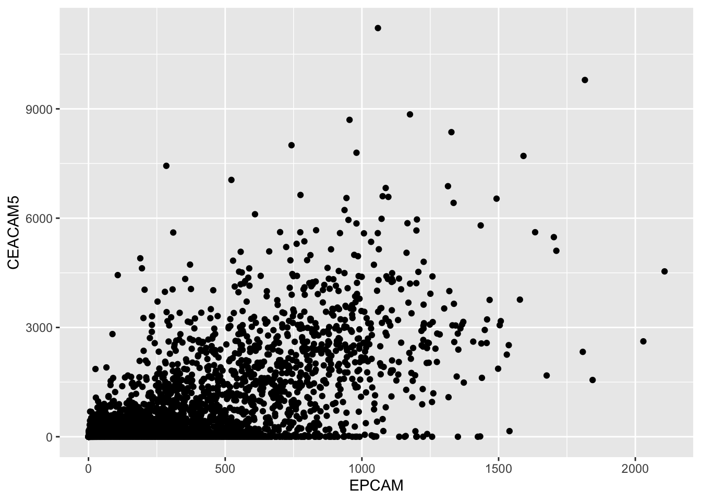
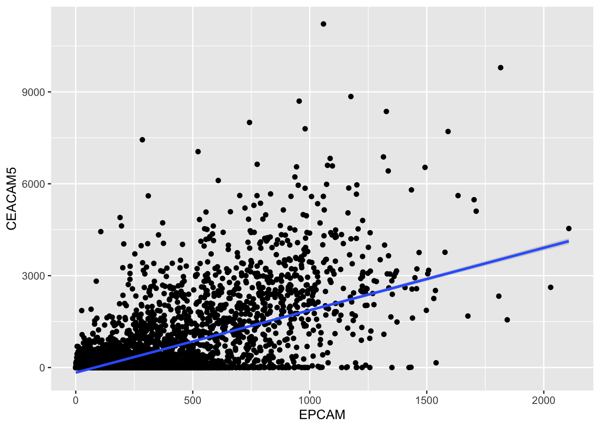
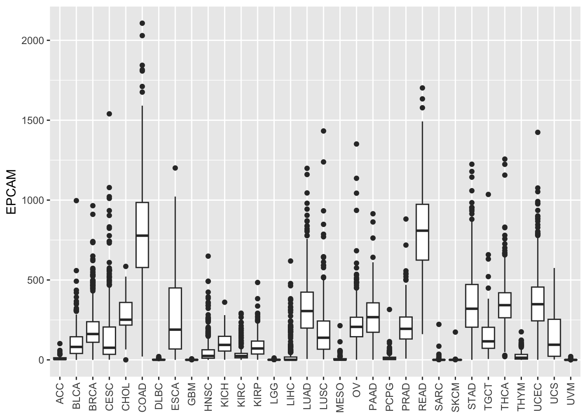

Chapter 10 Data visualization with ggplot2
In this lesson, we’ll learn how to create basic data visualizations in R using ggplot2. As a biology student, developing your data visualization skills is crucial for exploring trends and communicating findings.
If you read genomics papers, most of the figures are fell into several categories:
A bar plot
A line plot
A scatter plot
A boxplot or violin plot
A histogram
A heatmap
If you master those six types of figures, you can reproduce 90% of the figures in any genomics paper. Watch this:
ggplot2 is a powerful R package for flexible and professional-quality graphics. The key is thinking about visualization in layers:
The data layer - the data frame you want to plot
The aesthetic mapping - how data columns map to visual properties like x/y position, color, size etc.
Geometric objects like points, lines, boxes - the type of plot
Facets - panels for subgrouping the data
Stats transformations like group means, regressions etc.
Themes to refine the final look
Let’s walk through examples of common plot types.
10.1 Creating Scatter Plots
In this lesson, we will delve into data visualization and statistical analysis using R. We will work with a real-world dataset related to gene expression from The Cancer Genome Atlas (TCGA) and learn how to create scatter plots, calculate correlation coefficients, and visualize regression lines. These skills are fundamental for understanding relationships between variables in your data, which can be crucial for making data-driven conclusions.
10.1.1 Prerequisites
Before we begin, make sure you have R installed on your computer, along with the following R packages: readr, dplyr, and ggplot2. You can install these packages using the install.packages() function if you haven’t already.
Also, download the same TCGA gene expression data (CSV file) to your working directory or specify the correct file path.
Download the file at https://osf.io/yeun5
10.1.2 Loading and Exploring the Data
We’ll start by loading the TCGA gene expression data into R using the read_csv function from the readr package. This dataset contains information about various genes’ expression levels across different samples, including cancer, metastatic, and normal samples.
library(readr)
library(dplyr)
# Load the TCGA gene expression data
tcga_data <- read_csv("~/Downloads/TCGA_cancer_genes_expression.csv")Let’s take a look at the first few rows of the dataset to understand its structure.
## # A tibble: 6 × 25
## ...1 TACSTD2 VTCN1 MUC1 NECTIN4 FOLH1 FOLR1 CD276 MSLN CLDN6 ERBB2
## <chr> <dbl> <dbl> <dbl> <dbl> <dbl> <dbl> <dbl> <dbl> <dbl> <dbl>
## 1 43e715bf… 0.704 0 0.675 0.0862 7.21 0 52.8 0.0667 0.0970 1.88
## 2 1a5db9fc… 25.4 0 2.02 0.0728 23.6 0.122 78.8 0.956 0.255 7.78
## 3 93b382e4… 1.58 0 0.908 0.699 2.85 1.01 146. 0.0456 0.257 2.91
## 4 1f39dadd… 0.270 0.0910 0.0429 0.0165 1.16 0.279 48.5 0.0315 0.247 4.91
## 5 8c8c09b9… 0.412 0 0.115 0.0317 2.41 0.0492 42.3 0.270 0.126 1.49
## 6 85a86b91… 4.55 4.86 0.0421 0.0683 1.01 0.0225 20.6 0.0134 0.0182 13.5
## # ℹ 14 more variables: MUC16 <dbl>, DLL3 <dbl>, CEACAM5 <dbl>, PVR <dbl>,
## # EPCAM <dbl>, PROM1 <dbl>, CD24 <dbl>, EGFR <dbl>, MET <dbl>,
## # TNFRSF10B <dbl>, tcga.tcga_barcode <chr>,
## # tcga.cgc_sample_sample_type <chr>, study <chr>, sample_type <chr>Now, you should see a table with multiple columns, where each row represents a sample. The columns represent different genes’ expression levels, and we also have columns indicating the sample type, study, and more.
10.1.3 Filtering the Data
For our analysis, we want to focus on cancer samples only. Let’s filter the dataset to include only these samples and exclude normal and metastatic samples.
##
## cancer metastatic normal
## 10021 394 740# Filter the data to include only cancer samples
tcga_cancer <- tcga_data %>%
filter(sample_type == "cancer")We use the %>% operator to chain commands together. Here, we first filter the dataset to include only rows where sample_type is “cancer.”
10.1.4 Creating a Scatter Plot
For docs check: https://ggplot2.tidyverse.org/reference/ggplot.html
Now, let’s create a scatter plot to visualize the relationship between two gene expression levels. We’ll plot the expression of the EPCAM gene on the x-axis and the CEACAM5 gene (CEA) on the y-axis.
Docs on geom_point: https://ggplot2.tidyverse.org/reference/geom_point.html
library(ggplot2)
# Create a scatter plot
ggplot(tcga_cancer, aes(x = EPCAM, y = CEACAM5)) +
geom_point()
In the code above:
We use ggplot() to initialize a new ggplot2 plot.
Inside aes(), we specify the aesthetic mappings, where x represents the
EPCAMgene expression and y represents theCEACAM5gene expression.We add `
geom_point()to plot the data points on the graph.
10.1.4.1 Interpretation
The scatter plot visually represents the relationship between the EPCAM and CEACAM5 gene expression levels. Each point on the plot corresponds to a cancer sample, with its EPCAM expression on the x-axis and CEACAM5 expression on the y-axis. If the points tend to fall on the diagonal line, it suggests a relationship between the two gene expressions.
10.1.5 Calculating Correlation
To quantify the relationship between EPCAM and CEACAM5 gene expressions, we can calculate the Pearson correlation coefficient. This coefficient measures the strength and direction of the linear relationship between two variables.
# Calculate the Pearson correlation coefficient
correlation <- cor(tcga_cancer$EPCAM, tcga_cancer$CEACAM5)
correlation## [1] 0.6324328The output will be a value between -1 and 1, where:
A positive value (closer to 1) indicates a positive correlation (both variables increase together).
A negative value (closer to -1) indicates a negative correlation (one variable increases as the other decreases).
A value close to 0 indicates little to no linear correlation.
In our example, the correlation coefficient (Pearson’s r) is approximately 0.6324, which suggests a moderately positive correlation between EPCAM and CEACAM5 gene expressions among cancer samples.
10.1.6 Hypothesis Testing
Check docs here: https://rdrr.io/r/stats/cor.test.html
To determine if this correlation is statistically significant, we can perform a hypothesis test. In our case, we’re interested in testing whether the correlation is significantly different from zero.
# Perform a correlation hypothesis test
cor_test_result <- cor.test(tcga_cancer$EPCAM, tcga_cancer$CEACAM5)
cor_test_result##
## Pearson's product-moment correlation
##
## data: tcga_cancer$EPCAM and tcga_cancer$CEACAM5
## t = 81.722, df = 10019, p-value < 2.2e-16
## alternative hypothesis: true correlation is not equal to 0
## 95 percent confidence interval:
## 0.6205372 0.6440374
## sample estimates:
## cor
## 0.6324328The output will provide various statistics, including the t-value, degrees of freedom, and the p-value.
10.1.6.1 Interpretation
In the results, you’ll see:
The t-value, which measures the number of standard errors the correlation coefficient is away from zero.
The degrees of freedom (df), which are related to the sample size.
The p-value, which tells us whether the correlation is statistically significant.
In our case, the p-value is very close to zero (p-value < 2.2e-16), indicating strong evidence against the null hypothesis (the true correlation is zero). Therefore, we can conclude that the correlation between EPCAM and CEACAM5 gene expressions is statistically significant. You need to keep in mind that in genomics data analysis, typically you have thousands of samples and you will inherently get tiny p values. In our case, focus on the effect size (in this case, the coefficient value which is 0.63).
10.1.7 Adding a Regression Line
Check docs on geom_smooth here: https://ggplot2.tidyverse.org/reference/geom_smooth.html
To further explore the relationship between the two gene expressions, we can add a linear regression line to our scatter plot using geom_smooth().
# Create a scatter plot with a regression line
ggplot(tcga_cancer, aes(x = EPCAM, y = CEACAM5)) +
geom_point() +
geom_smooth(method = "lm")
The geom_smooth() function with method = "lm" fits a linear regression line to the data points, helping us visualize the trend more clearly.
The regression line provides a visual representation of how one gene’s expression (EPCAM) changes concerning the other (CEACAM5). If the line slopes upward, it suggests a positive correlation, while a downward slope indicates a negative correlation.
10.1.8 Conclusion
In this lesson, we’ve covered the basics of creating scatter plots, calculating correlation coefficients, and performing hypothesis tests using R. These skills are essential for exploring relationships between variables in your data, whether you’re analyzing gene expressions, financial data, or any other dataset. Remember that correlation does not imply causation, so it’s essential to interpret your findings carefully and consider the context of your analysis.
10.2 Understanding Distributions with Histograms
In this section, we will explore another powerful data visualization tool: histograms. Histograms are especially useful for understanding the distribution of a single numerical variable. We will use R and the ggplot2 package to create histograms and customize them to gain insights into the distribution of gene expression levels.
For this course we’re using the data we generated in previous lesson.
10.2.1 Creating a Basic Histogram
Let’s start by creating a basic histogram to visualize the distribution of the EPCAM gene expression levels across all cancer samples.
# Create a basic histogram for EPCAM gene expression
ggplot(tcga_cancer, aes(x = EPCAM)) +
geom_histogram()
In this code:
We use
ggplot()to initialize a new ggplot2 plot.Inside
aes(), we specify that we want to map theEPCAMgene expression values to the x-axis.We add
geom_histogram()to create the histogram.
The resulting plot will display the EPCAM gene expression levels on the x-axis and the count of samples falling into each “bin†on the y-axis. A bin is a range of values, and the height of each bar represents how many samples have expression levels within that range.
10.2.2 Customizing Histogram Bins
You can customize the granularity of your histogram by changing the number of bins or specifying the bin size. This allows you to get a more detailed or broader view of the data distribution.
10.2.2.1 Changing the Number of Bins
To change the number of bins, you can use the bins parameter within geom_histogram(). Increasing the number of bins provides more detail.
10.2.2.2 Customizing Bin Borders
By default, the borders of the bins in the histogram are not very visible. You can change the border color to white to make them more distinct.
# Create a histogram with white bin borders
ggplot(tcga_cancer, aes(x = EPCAM)) +
geom_histogram(bins = 50, color = "white")
Changing the bin border color to white makes it easier to distinguish between adjacent bins.
10.2.3 Conclusion
Histograms are valuable tools for visualizing the distribution of a single numerical variable, helping you understand the underlying data structure. By customizing the number of bins, bin sizes, and bin borders, you can tailor your histograms to reveal the level of detail you need. Whether you are analyzing gene expression data or any other quantitative data, histograms are an essential part of your data exploration toolkit.
10.3 Visualizing Data Distribution with Boxplots and Violin Plots
In this lesson, we will explore how to visualize the distribution of gene expression data across different cancer types using boxplots and violin plots in R. These graphical tools are invaluable for gaining insights into the spread and central tendency of data within different categories.
We will continue to work with the TCGA gene expression dataset, specifically focusing on cancer samples (tcga_cancer). This dataset contains various gene expression measurements across different cancer types.
10.3.1 Creating a Basic Boxplot
Let’s start by creating a basic boxplot to visualize the distribution of the EPCAM gene expression across different cancer types.

In this code:
We use
ggplot()to initialize the plot.We map the x-axis to study (representing cancer types) and the y-axis to EPCAM gene expression.
We add
geom_boxplot()to create the boxplots.
10.3.2 Rotating X-axis Labels
You may notice that the x-axis labels (cancer types) overlap. To make the plot more readable, we can rotate the x-axis labels by 90 degrees and remove the x-axis label using the theme function.
ggplot(tcga_cancer, aes(x = study, y = EPCAM)) +
geom_boxplot() +
theme(axis.text.x = element_text(angle = 90, vjust = 0.5, hjust = 1),
axis.title.x = element_blank()) Now, the x-axis labels are more legible.
10.3.3 Adding Color to Boxplots
To distinguish between cancer types more effectively, let’s add color to the boxplots by mapping the color aesthetic to the study.
ggplot(tcga_cancer, aes(x = study, y = EPCAM)) +
geom_boxplot(aes(color = study)) +
theme(axis.text.x = element_text(angle = 90, vjust = 0.5, hjust = 1),
axis.title.x = element_blank())
Alternatively, you can use fill to color the boxes instead of the outlines:
ggplot(tcga_cancer, aes(x = study, y = EPCAM)) +
geom_boxplot(aes(fill = study)) +
theme(axis.text.x = element_text(angle = 90, vjust = 0.5, hjust = 1),
axis.title.x = element_blank())By default, ggplot2 uses a default color palette, but you can specify colors manually if needed.
10.3.4 Customizing Color Palettes
In case you want to define your color palette for the cancer types, you can use the Polychrome package.
## [1] 32Here’s how to create a custom color palette for 32 cancer types:
# install.packages("Polychrome")
library(Polychrome)
# There are a total of 32 cancer types
length(unique(tcga_cancer$study))## [1] 32# Create a custom color palette with Polychrome
P32 <- createPalette(32, c("#FF0000", "#00FF00", "#0000FF"), range = c(30, 80))
P32## NC1 NC2 NC3 NC4 NC5 NC6 NC7 NC8
## "#FD001C" "#40DF00" "#1626FC" "#7D494D" "#FD00E6" "#0DD6F6" "#DBC50D" "#E57300"
## NC9 NC10 NC11 NC12 NC13 NC14 NC15 NC16
## "#D4A5FE" "#007D49" "#EF328A" "#2A5672" "#9E0D85" "#C216FB" "#CBC69F" "#229BF8"
## NC17 NC18 NC19 NC20 NC21 NC22 NC23 NC24
## "#F78A95" "#91C24B" "#631CAD" "#E6B9D7" "#AA7016" "#9DCED0" "#1CE091" "#CA2226"
## NC25 NC26 NC27 NC28 NC29 NC30 NC31 NC32
## "#494D16" "#865690" "#D75CE3" "#FB51C3" "#FBAF0D" "#9E0D51" "#8BB0E9" "#FD99E7"You see the hex code for the colors.
Now, we have a custom color palette P32 with 32 unique colors. You can visualize the colors using swatch(P32) in the polychrom package.
10.3.5 Applying Custom Color Palette
To use the custom color palette with your boxplot, use scale_fill_manual() or scale_color_manual() to map the colors manually to the study variable.
ggplot(tcga_cancer, aes(x = study, y = EPCAM)) +
geom_boxplot(aes(fill = study)) +
scale_fill_manual(values = unname(P32)) +
theme(axis.text.x = element_text(angle = 90, vjust = 0.5, hjust = 1),
axis.title.x = element_blank())
Note, you need to remove the names of the named color vector using unname.
Now, the boxplot colors are based on your custom palette, making it more visually appealing and distinct.
10.3.6 Reordering Boxplots
To reorder the boxes according to the median level of EPCAM expression, you can use the forcats::fct_reorder() function within your aes() mapping.
ggplot(tcga_cancer, aes(x = study %>%
forcats::fct_reorder(EPCAM, median),
y = EPCAM)) +
geom_boxplot(aes(fill = study)) +
scale_fill_manual(values = unname(P32)) +
theme(axis.text.x = element_text(angle = 90, vjust = 0.5, hjust = 1),
axis.title.x = element_blank())The forcats::fct_reorder() function takes two arguments:
The first argument (study) is the factor variable whose levels we want to reorder.
The second argument (EPCAM) is the numeric variable based on which the reordering will be done (in this case, the median expression levels of EPCAM).
As a result of this reordering, the levels of the study factor will be rearranged from low to high median EPCAM expression levels. Now, the boxes are arranged from low to high EPCAM expression levels, providing a clearer view of the data distribution.
10.3.7 Using Violin Plots
Violin plots combine a boxplot with a kernel density plot, allowing you to visualize both the summary statistics and the entire data distribution.
ggplot(tcga_cancer, aes(x = study %>%
forcats::fct_reorder(EPCAM, median),
y = EPCAM)) +
geom_violin(aes(fill = study), scale = "width") +
scale_fill_manual(values = unname(P32)) +
theme(axis.text.x = element_text(angle = 90, vjust = 0.5, hjust = 1),
axis.title.x = element_blank())In this code, we replaced geom_boxplot with geom_violin to create a violin plot. The width of the violin plots is scaled for better visibility.
10.3.8 Conclusion
In this lesson, we’ve explored how to visualize data distribution using boxplots and violin plots in R. These techniques are essential for understanding the spread and central tendencies of data within different categories or groups. By customizing colors, reordering boxes, and using violin plots, you can effectively communicate insights from your data to others.
10.4 Creating Bar Plots to Visualize Median EPCAM Levels by Cancer Type
In this section, we will learn how to create informative bar plots using R. Specifically, we’ll use bar plots to display the median levels of the EPCAM gene expression for different types of cancer. This visualization will help us understand how EPCAM expression varies across various cancer studies. We will also explore techniques to reorder and customize our bar plots for better data interpretation.
10.4.1 Calculating Median EPCAM Levels by Cancer Type
The median EPCAM expression levels represent the middle value of EPCAM gene expression measurements for different types of cancer studies, providing a central measure to understand how this gene behaves in each type of cancer.
To begin, we’ll calculate the median EPCAM expression levels for each cancer study type. We will create a summary table that includes the cancer study names and their corresponding median EPCAM values.
# Calculate median EPCAM levels by cancer type
EPCAM_median <- tcga_cancer %>%
group_by(study) %>%
summarize(median_EPCAM = median(EPCAM))
# Display the summary table
EPCAM_median## # A tibble: 32 × 2
## study median_EPCAM
## <chr> <dbl>
## 1 ACC 4.83
## 2 BLCA 81.1
## 3 BRCA 162.
## 4 CESC 75.9
## 5 CHOL 251.
## 6 COAD 778.
## 7 DLBC 0.578
## 8 ESCA 189.
## 9 GBM 0.307
## 10 HNSC 24.7
## # ℹ 22 more rowsThis table now shows the median EPCAM expression levels for each cancer study type, making it easier to compare across different types of cancer.
10.4.2 Creating a Basic Bar Plot
Now, let’s create a simple bar plot to visualize these median EPCAM levels. We will use geom_bar() to create bars representing the median values.
library(ggplot2)
# Create a basic bar plot
ggplot(EPCAM_median, aes(x = study, y = median_EPCAM)) +
geom_bar(stat = "identity") +
theme(axis.text.x = element_text(angle = 90, vjust = 0.5, hjust = 1),
axis.title.x = element_blank())
In this code:
We use
ggplot()to initialize the plot.aes()specifies the aesthetic mappings, wherexrepresents the cancer study names, andyrepresents the median EPCAM values.geom_bar(stat = "identity")creates bars where the height of each bar corresponds to the median EPCAM value.theme()is used to customize the appearance of the plot, including rotating the x-axis labels for better readability.
The basic bar plot displays the median EPCAM levels for each cancer study type, but the bars are not ordered based on the values. We can improve the plot by reordering the bars according to the median EPCAM levels.
10.4.3 Reordering the Bars
To make our bar plot more informative, let’s reorder the bars based on the median EPCAM values. We can use the forcats::fct_reorder() function to achieve this.
# Reorder the bars based on median EPCAM values
ggplot(EPCAM_median, aes(x = study %>%
forcats::fct_reorder(median_EPCAM),
y = median_EPCAM)) +
geom_bar(stat = "identity") +
theme(axis.text.x = element_text(angle = 90, vjust = 0.5, hjust = 1),
axis.title.x = element_blank())In this code:
We use forcats::fct_reorder() within aes() to reorder the study variable based on the median_EPCAM values.
The median_EPCAM values determine the order of the bars from lowest to highest.
Now, the bars are reordered based on the median EPCAM levels, allowing for easier comparison between different cancer study types. This visualization provides insights into which studies exhibit higher or lower median EPCAM expression levels.
10.4.4 Reversing the Order
If you want to reverse the order of the bars, you can use the .desc = TRUE argument with forcats::fct_reorder().
# Reverse the order of the bars
ggplot(EPCAM_median, aes(x = study %>%
forcats::fct_reorder(median_EPCAM, .desc = TRUE),
y = median_EPCAM)) +
geom_bar(stat = "identity") +
theme(axis.text.x = element_text(angle = 90, vjust = 0.5, hjust = 1),
axis.title.x = element_blank())
By specifying .desc = TRUE, the bars will be reordered in descending order based on the median EPCAM values.
10.4.5 Note on factor levels
xxxx
10.4.6 Conclusion
In this lesson, we have learned how to create bar plots to visualize median EPCAM expression levels by different cancer study types. We explored the process of reordering bars based on values, allowing us to better compare and interpret the data. The order of the bar depends on the factor levels of the study and we used fct_reorder to accomplish that. Remember that effective data visualization can greatly enhance your ability to communicate insights and make data-driven decisions.